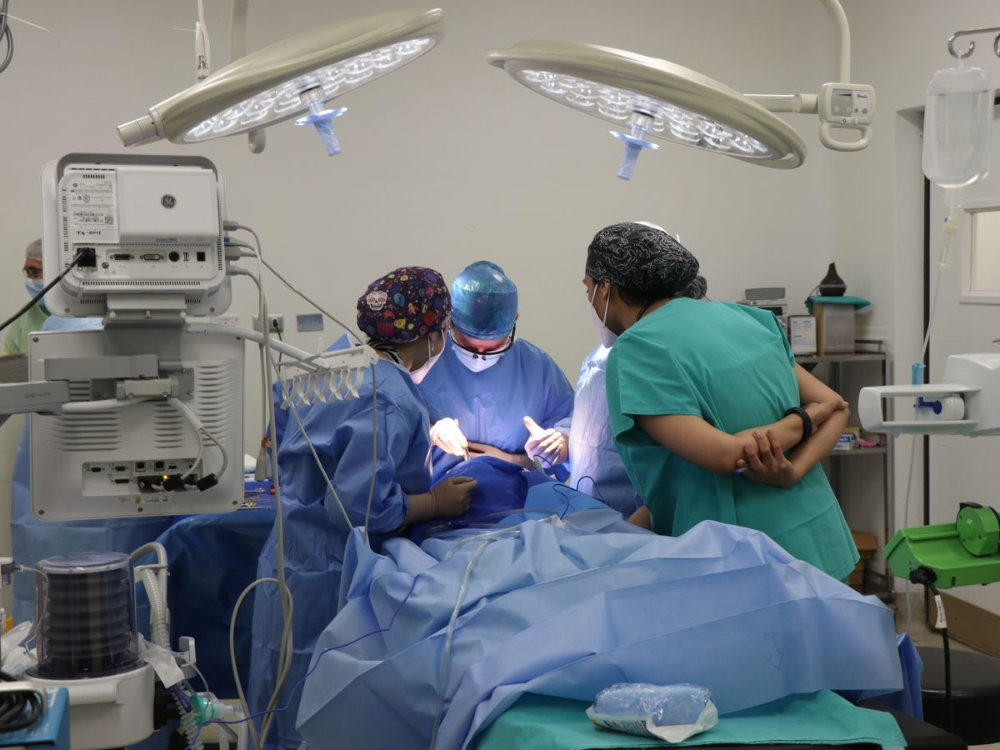
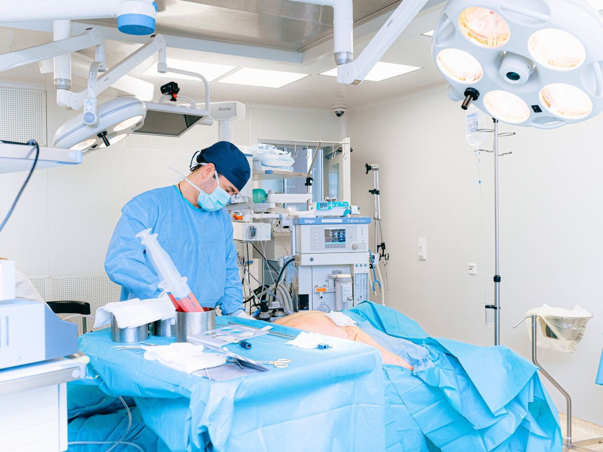

Endobronchial Ultrasound (EBUS) is a specialised procedure that allows a pulmonologist to look beyond the airway walls and evaluate structures deep within the chest using a bronchoscope equipped with an ultrasound probe.
EBUS provides real-time imaging of lymph nodes within the chest, mediastinal masses, suspicious abnormalities and areas identified on CT or PET scans, while also allowing targeted tissue sampling for a highly accurate diagnosis.
At Healthy Chest & Sleep Clinic, Dr. Vishal Sharma offers EBUS as an advanced procedure that combines bronchoscopy with real-time ultrasound imaging, helping patients avoid unnecessary surgery whenever possible.
Book a consultation
While CT and PET scans can identify abnormalities, they often cannot determine exactly what those abnormalities represent. EBUS helps answer the important questions.
Determining the nature of a suspicious nodule
Why enlarged lymph nodes are present
Whether lung cancer has reached the lymph nodes
Distinguishing TB from other causes
Identifying inflammatory rather than cancerous causes
EBUS plays a crucial role in evaluating a wide range of chest conditions that often require tissue diagnosis before treatment decisions can be made.
Diagnosing and staging by evaluating lymph nodes and obtaining tissue.
Identifying the underlying cause of enlargement in the chest.
Obtaining samples to confirm TB involving chest lymph nodes.
Evaluating inflammation affecting the lungs and lymph nodes.
Providing tissue diagnosis before treatment decisions.
Clarifying imaging findings that remain unclear.
In many situations, EBUS provides information that cannot be obtained through imaging alone.
Seen on a CT scan
Requiring further evaluation
Areas of concern on imaging
Needing tissue confirmation
Suspected and requiring sampling
Required to plan treatment
The procedure follows a careful, structured process designed to ensure comfort, safety and a precise diagnosis.
Your symptoms, history, imaging, medications and overall health are reviewed carefully.
The procedure is usually performed under sedation or anaesthesia, with close monitoring.
Real-time imaging allows visualisation of lymph nodes and structures beyond the airway walls.
Highly targeted samples are obtained from suspicious areas using ultrasound guidance.
Samples are sent for specialised testing to establish a definitive diagnosis.
Before EBUS became widely available, many patients required surgical procedures such as mediastinoscopy to evaluate chest lymph nodes. Today, EBUS often provides the same diagnostic information through a much less invasive approach.
For many patients, this means less discomfort, faster recovery, lower procedural risk, earlier diagnosis and quicker treatment decisions.

EBUS is considered safe when performed by trained pulmonary specialists. Before recommending it, Dr. Vishal Sharma carefully evaluates every relevant factor.
A detailed review of your health background.
Assessing conditions that may affect the procedure.
Reviewing medicines for safe planning.
Studying scans to plan a targeted approach.
Patient safety remains the highest priority.
Most patients are able to return home the same day unless additional observation is required. Specific post-procedure instructions are provided to support recovery.
A temporary, manageable sensation.
Usually settles shortly after the procedure.
Same-day return home for most patients.
Advanced training in minimally invasive respiratory procedures.
Accurate diagnoses while minimising patient discomfort.
Expert assessment of cancer, TB, sarcoidosis and complex abnormalities.
Clear explanations and support throughout the diagnostic journey.
Access to modern respiratory diagnostics and specialised care.
When chest imaging reveals abnormalities, obtaining the correct diagnosis is the foundation of effective treatment. Consult Dr. Vishal Sharma to learn whether EBUS is appropriate for your condition and take the next step towards clarity.